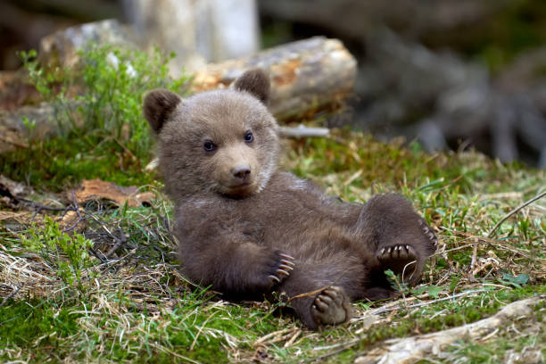

Medvedi
Medvjedi (Ursidae) su porodica sisara iz reda zvijeri (Carnivora). Ranije ih se nazivalo "velikim medvjedima" ili još i "pravim medvjedima", da bi ih tako razlikovali od rakuna (Procyonidae) koje su nazivali "malim medvjedima". Jedna vrsta iz te porodice, mrki medvjed, je najveća divlja životinja i grabežljivac na bosanskom tlu.
Građom tijela, sve vrste medvjeda su međusobno vrlo slične. Tijela su im zbijena, glave okrugle a udovi relativno kratki i vrlo snažni.
Oči su male, a uši okrugle i uspravne. U izduženoj njuški imaju, ovisno o vrsti, 40 ili 42 zuba.
Noge završavaju s pet prstiju s kandžama koje ne mogu uvući. Hodaju na tabanima koji su uglavnom dlakavi, osim kod vrsta koje se često penju na drveće, kao kod sunčevog medvjeda čiji su tabani goli.
jelesna težina im se kreće od 25 pa do 800 kg, pri čemu su mužjaci uvijek osjetno teži od ženki.